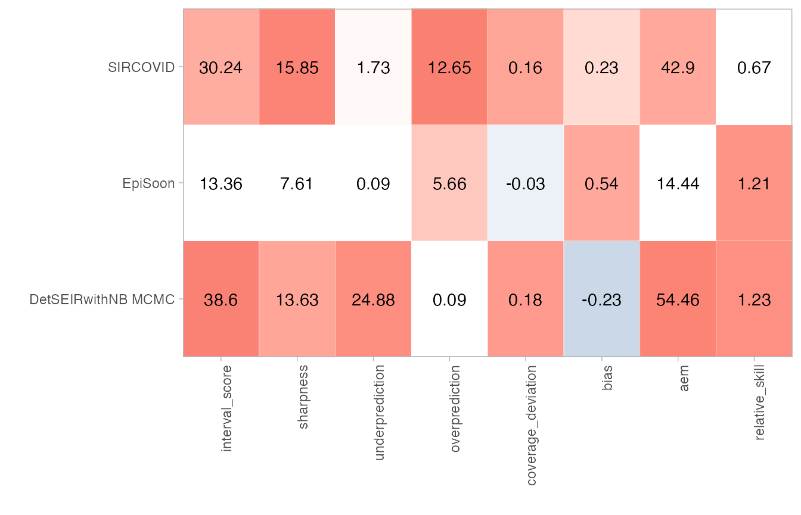
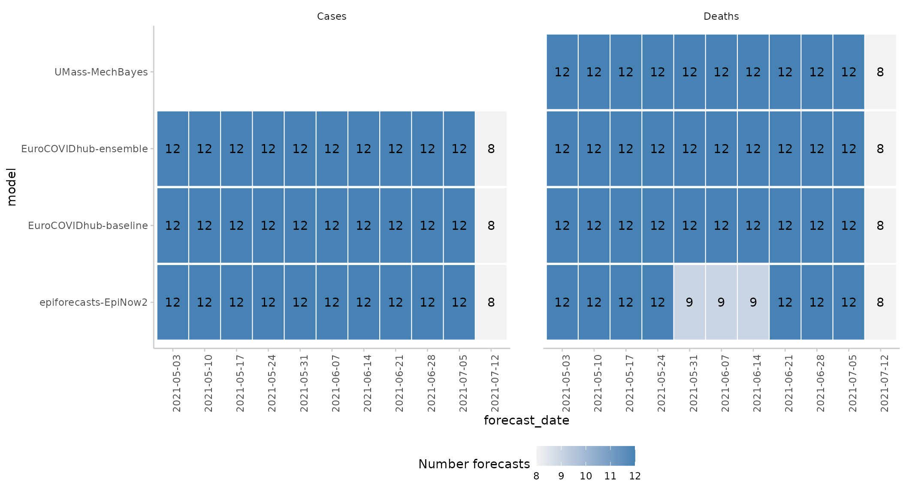
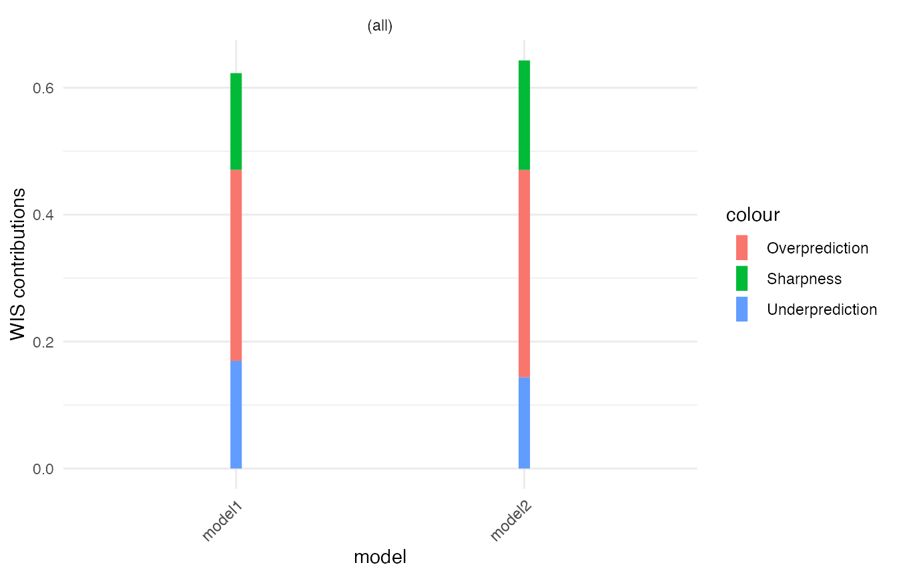
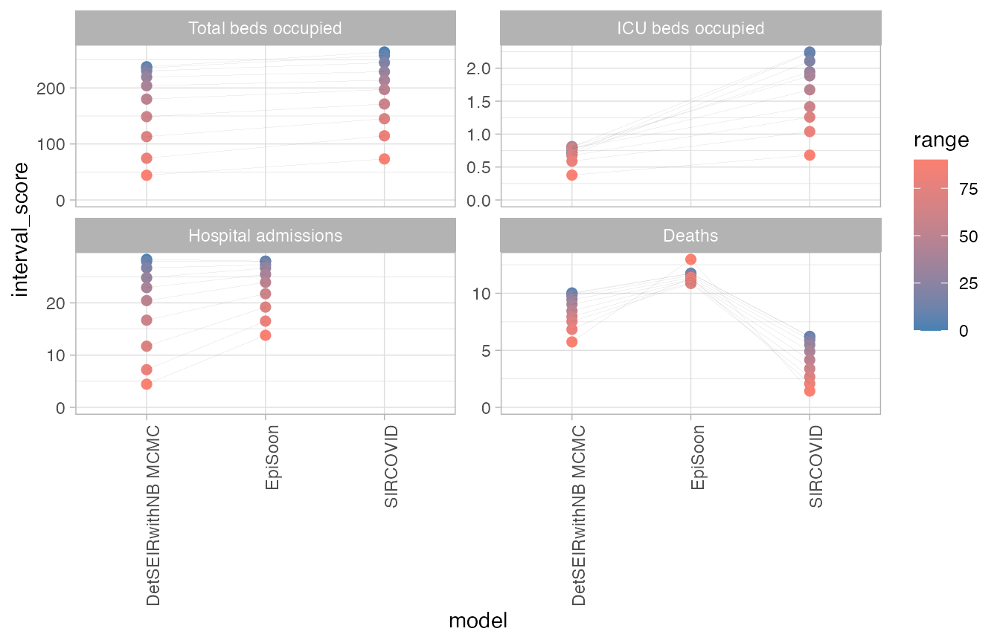
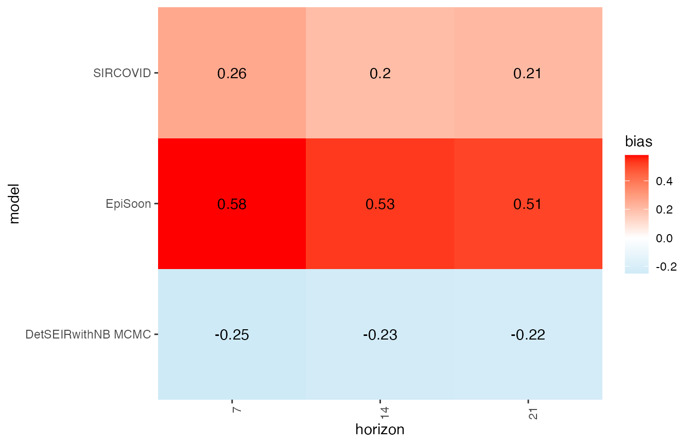

Introduction and Overview of Functionality
The scoringutils package provides a collection of metrics and proper scoring rules that make it simple to score forecasts against the true observed values. Predictions can either be automatically scored from a data.frame using the function eval_forecasts(). Alternatively, evaluation metrics can be accessed directly using lower level functions within a vector/matrix framework.
Predictions can be handled in various formats: scoringutils can handle probabilistic forecasts in either a sample based or a quantile based format. For more detail on the expected input formats please see below. True values can be integer, continuous or binary.
In addition to automatic scoring, scoringutils offers a variety of plots and visualisations.
Scoring Forecasts Automatically
Most of the time, the eval_forecasts() function will be able to do the entire evaluation for you. The idea is simple, yet flexible.
All you need to do is to pass in a data.frame that has a column called prediction and one called true_value. Depending on the exact input format, additional columns like sample, quantile or range and boundary are needed. Additional columns may be present to indicate a grouping of forecasts. For example, we could have forecasts made by different models in various locations at different time points, each for several weeks into the future. In this case, we would have additional columns called for example model, date, forecast_date, forecast_horizon and location.
Using the by argument you need to specify the unit of a single forecast. In this example here we would set by = c("model", "date", "forecast_date", "forecast_horizon", "location") (note: if we want to be pedantic, there is a small duplication as the information of “date” is already included in the combination of “forecast_date” and “forecast_horizon”. But as long as there isn’t some weird shift, this doesn’t matter for the purpose of grouping our observations). If you don’t specify by (i.e. by = NULL), scoringutils will automatically use all appropriate present columns. Note that you don’t need to include columns such as quantile or sample in the by argument, as several quantiles / samples make up one forecast.
Using the summarise_by argument you can now choose categories to aggregate over. If you were only interested in scores for the different models, you would specify summarise_by = c("model"). If you wanted to have scores for every model in every location, you would need to specify summarise_by = c("model", "location"). If you wanted to have one score per quantile or one per prediction interval range, you could specify something like summarise_by = c("model", "quantile") or summarise_by = c("model", "quantile", "range") (note again that some information is duplicated in quantile and range, but this doesn’t really matter for grouping purposes). When aggregating, eval_forecasts takes the mean according to the group defined in summarise_by (i.e. in this example, if summarise_by = c("model", "location"), scores will be averaged over all forecast dates, forecast horizons and quantiles to yield one score per model and location). In addition to the mean, you can also obtain the standard deviation of the scores over which you average or any desired quantile (e.g. the median in addition to the mean) by specifying sd = TRUE and quantiles = c(0.5).
Example Evaluation
Here is an example of an evaluation using the example data included in the package. The data comes from a set of Covid-19 short-term forecasts in the UK.
library(scoringutils)
#> Note: The definition of the weighted interval score has slightly changed in version 0.1.5. If you want to use the old definition, use the argument `count_median_twice = TRUE` in the function `eval_forecasts()`
data <- scoringutils::quantile_example_data
print(data, 3, 3)
#> value_date value_type geography value_desc true_value
#> 1: 2020-05-04 hospital_inc England Hospital admissions 1043
#> 2: 2020-05-04 hospital_prev England Total beds occupied 10648
#> 3: 2020-05-11 hospital_inc England Hospital admissions 743
#> ---
#> 5150: 2020-08-03 death_inc_line Wales Deaths 1
#> 5151: 2020-08-03 death_inc_line Wales Deaths 1
#> 5152: 2020-08-03 death_inc_line Wales Deaths 1
#> model creation_date quantile prediction horizon
#> 1: <NA> <NA> NA NA NA
#> 2: <NA> <NA> NA NA NA
#> 3: <NA> <NA> NA NA NA
#> ---
#> 5150: SIRCOVID 2020-07-13 0.85 4 21
#> 5151: DetSEIRwithNB MCMC 2020-07-13 0.90 2 21
#> 5152: SIRCOVID 2020-07-13 0.90 6 21
scores <- scoringutils::eval_forecasts(data,
summarise_by = c("model", "quantile", "range"))
print(scores, 3, 3)
#> model quantile range interval_score sharpness underprediction
#> 1: DetSEIRwithNB MCMC 0.50 0 54.45528 0.000000 54.16260163
#> 2: DetSEIRwithNB MCMC 0.45 10 53.96138 6.310976 47.42276423
#> 3: DetSEIRwithNB MCMC 0.55 10 53.96138 6.310976 47.42276423
#> ---
#> 55: SIRCOVID 0.90 80 18.18000 17.368889 0.15555556
#> 56: SIRCOVID 0.05 90 11.69444 11.661111 0.03333333
#> 57: SIRCOVID 0.95 90 11.69444 11.661111 0.03333333
#> overprediction coverage coverage_deviation bias aem
#> 1: 0.2926829 0.3170732 0.31707317 -0.2333333 54.45528
#> 2: 0.2276423 0.4308943 0.33089431 -0.2333333 54.45528
#> 3: 0.2276423 0.4308943 0.33089431 -0.2333333 54.45528
#> ---
#> 55: 0.6555556 0.9333333 0.13333333 0.2255556 42.90000
#> 56: 0.0000000 0.9888889 0.08888889 0.2255556 42.90000
#> 57: 0.0000000 0.9888889 0.08888889 0.2255556 42.90000
#> quantile_coverage
#> 1: 0.4959350
#> 2: 0.4308943
#> 3: 0.5691057
#> ---
#> 55: 0.9777778
#> 56: 0.2666667
#> 57: 0.9888889Using an appropriate level of summary, we can easily use the output for visualisation. The scoringutils package offers some built-in functions to help get a sense of the data
#
# filtered_data <- data[geography == "England" &
# creation_date <= "2020-06-29" &
# value_desc == "Deaths"]
scoringutils::plot_predictions(data = data,
filter_both = list("geography == 'England'"),
filter_forecasts = list("creation_date == '2020-07-06'"),
filter_truth = list("as.Date(value_date) <= '2020-07-06'"),
x = "value_date",
range = c(0, 50, 90),
scale = "free",
facet_formula = value_desc ~ model)
scores <- scoringutils::eval_forecasts(data,
summarise_by = c("model"))
scoringutils::score_table(scores)
Given this level of aggregation, not all metrics may make sense. In this case, for example, averaging over different quantiles to compute quantile coverage does not make much sense. If you like, you can select specific metrics for the visualisation.
Let us look at calibration:
scores <- scoringutils::eval_forecasts(data,
summarise_by = c("model", "range", "quantile"))
scoringutils::interval_coverage(scores) +
ggplot2::ggtitle("Interval Coverage")
scoringutils::quantile_coverage(scores) +
ggplot2::ggtitle("Quantile Coverage")
Let us look at the individual components of the weighted interval score:
scores <- scoringutils::eval_forecasts(data,
summarise_by = c("model", "value_desc"))
scoringutils::wis_components(scores, facet_formula = ~ value_desc)
We can also look at contributions to different metrics by range:
scores <- scoringutils::eval_forecasts(data,
summarise_by = c("model", "range", "value_desc"))
scoringutils::range_plot(scores, y = "interval_score",
facet_formula = ~ value_desc)
We can also visualise metrics using a heatmap:
scores <- scoringutils::eval_forecasts(data,
summarise_by = c("model", "horizon"))
scores$horizon <- as.factor(scores$horizon)
scoringutils::score_heatmap(scores,
x = "horizon", metric = "bias")
Expected Input Formats
The eval_forecasts() function is designed to work with various different input formats. The following formats are currently supported:
quantile forecasts in either a plain quantile format or in a format that specifies interval ranges and the boundary of a given interval range.
print(scoringutils::quantile_example_data, 3, 3)
#> value_date value_type geography value_desc true_value
#> 1: 2020-05-04 hospital_inc England Hospital admissions 1043
#> 2: 2020-05-04 hospital_prev England Total beds occupied 10648
#> 3: 2020-05-11 hospital_inc England Hospital admissions 743
#> ---
#> 5150: 2020-08-03 death_inc_line Wales Deaths 1
#> 5151: 2020-08-03 death_inc_line Wales Deaths 1
#> 5152: 2020-08-03 death_inc_line Wales Deaths 1
#> model creation_date quantile prediction horizon
#> 1: <NA> <NA> NA NA NA
#> 2: <NA> <NA> NA NA NA
#> 3: <NA> <NA> NA NA NA
#> ---
#> 5150: SIRCOVID 2020-07-13 0.85 4 21
#> 5151: DetSEIRwithNB MCMC 2020-07-13 0.90 2 21
#> 5152: SIRCOVID 2020-07-13 0.90 6 21
print(scoringutils::range_example_data_long, 3, 3)
#> value_date value_type geography value_desc true_value
#> 1: 2020-05-04 hospital_inc England Hospital admissions 1043
#> 2: 2020-05-04 hospital_prev England Total beds occupied 10648
#> 3: 2020-05-11 hospital_inc England Hospital admissions 743
#> ---
#> 5417: 2020-07-27 death_inc_line Wales Deaths 1
#> 5418: 2020-08-03 death_inc_line Wales Deaths 1
#> 5419: 2020-08-03 death_inc_line Wales Deaths 1
#> model creation_date prediction horizon boundary range
#> 1: <NA> <NA> NA NA <NA> NA
#> 2: <NA> <NA> NA NA <NA> NA
#> 3: <NA> <NA> NA NA <NA> NA
#> ---
#> 5417: SIRCOVID 2020-07-13 1 14 upper 0
#> 5418: DetSEIRwithNB MCMC 2020-07-13 0 21 upper 0
#> 5419: SIRCOVID 2020-07-13 1 21 upper 0
print(scoringutils::range_example_data_wide, 3, 3)
#> value_date value_type geography value_desc true_value
#> 1: 2020-05-04 death_inc_line England Deaths 448
#> 2: 2020-05-04 death_inc_line Northern Ireland Deaths 9
#> 3: 2020-05-04 death_inc_line Scotland Deaths 40
#> ---
#> 344: 2020-08-03 hospital_prev England Total beds occupied 784
#> 345: 2020-08-03 hospital_prev Scotland Total beds occupied 265
#> 346: 2020-08-03 icu_prev Scotland ICU beds occupied 3
#> model creation_date horizon lower_0 lower_10 lower_20
#> 1: <NA> <NA> NA NA NA NA
#> 2: <NA> <NA> NA NA NA NA
#> 3: <NA> <NA> NA NA NA NA
#> ---
#> 344: <NA> <NA> NA NA NA NA
#> 345: <NA> <NA> NA NA NA NA
#> 346: DetSEIRwithNB MCMC 2020-07-13 21 2 2 2
#> lower_30 lower_40 lower_50 lower_60 lower_70 lower_80 lower_90 upper_0
#> 1: NA NA NA NA NA NA NA NA
#> 2: NA NA NA NA NA NA NA NA
#> 3: NA NA NA NA NA NA NA NA
#> ---
#> 344: NA NA NA NA NA NA NA NA
#> 345: NA NA NA NA NA NA NA NA
#> 346: 2 2 1 1 1 1 0 2
#> upper_10 upper_20 upper_30 upper_40 upper_50 upper_60 upper_70 upper_80
#> 1: NA NA NA NA NA NA NA NA
#> 2: NA NA NA NA NA NA NA NA
#> 3: NA NA NA NA NA NA NA NA
#> ---
#> 344: NA NA NA NA NA NA NA NA
#> 345: NA NA NA NA NA NA NA NA
#> 346: 3 3 3 3 4 4 4 5
#> upper_90
#> 1: NA
#> 2: NA
#> 3: NA
#> ---
#> 344: NA
#> 345: NA
#> 346: 6sample based format with either continuous or integer values
print(scoringutils::integer_example_data, 3, 3)
#> value_date value_type geography value_desc model
#> 1: 2020-05-04 hospital_inc England Hospital admissions <NA>
#> 2: 2020-05-04 hospital_prev England Total beds occupied <NA>
#> 3: 2020-05-11 hospital_inc England Hospital admissions <NA>
#> ---
#> 13427: 2020-08-03 death_inc_line Wales Deaths SIRCOVID
#> 13428: 2020-08-03 death_inc_line Wales Deaths SIRCOVID
#> 13429: 2020-08-03 death_inc_line Wales Deaths SIRCOVID
#> creation_date horizon prediction sample true_value
#> 1: <NA> NA NA NA 1043
#> 2: <NA> NA NA NA 10648
#> 3: <NA> NA NA NA 743
#> ---
#> 13427: 2020-07-13 21 0 48 1
#> 13428: 2020-07-13 21 0 49 1
#> 13429: 2020-07-13 21 0 50 1
print(scoringutils::continuous_example_data, 3, 3)
#> value_date value_type geography value_desc model
#> 1: 2020-05-04 hospital_inc England Hospital admissions <NA>
#> 2: 2020-05-04 hospital_prev England Total beds occupied <NA>
#> 3: 2020-05-11 hospital_inc England Hospital admissions <NA>
#> ---
#> 13427: 2020-08-03 death_inc_line Wales Deaths SIRCOVID
#> 13428: 2020-08-03 death_inc_line Wales Deaths SIRCOVID
#> 13429: 2020-08-03 death_inc_line Wales Deaths SIRCOVID
#> creation_date horizon prediction sample true_value
#> 1: <NA> NA NA NA 1043
#> 2: <NA> NA NA NA 10648
#> 3: <NA> NA NA NA 743
#> ---
#> 13427: 2020-07-13 21 0.3340917507 48 1
#> 13428: 2020-07-13 21 0.3540187438 49 1
#> 13429: 2020-07-13 21 0.0001998965 50 1forecasts in a binary format:
print(scoringutils::binary_example_data, 3, 3)
#> value_date value_type geography value_desc model
#> 1: 2020-05-04 hospital_inc England Hospital admissions <NA>
#> 2: 2020-05-04 hospital_prev England Total beds occupied <NA>
#> 3: 2020-05-11 hospital_inc England Hospital admissions <NA>
#> ---
#> 344: 2020-07-27 death_inc_line Wales Deaths SIRCOVID
#> 345: 2020-08-03 death_inc_line Wales Deaths DetSEIRwithNB MCMC
#> 346: 2020-08-03 death_inc_line Wales Deaths SIRCOVID
#> creation_date horizon prediction true_value
#> 1: <NA> NA NA NA
#> 2: <NA> NA NA NA
#> 3: <NA> NA NA NA
#> ---
#> 344: 2020-07-13 14 0.34 0
#> 345: 2020-07-13 21 0.22 1
#> 346: 2020-07-13 21 0.26 0It also offers functionality to convert between these formats. For more information have a look at the documentation of the following functions:
scoringutils::sample_to_quantile() # convert from sample based to quantile format
scoringutils::range_long_to_quantile() # convert from range format to plain quantile
scoringutils::quantile_to_range_long() # convert the other way round
scoringutils::range_wide_to_long() # convert range based format from wide to long
scoringutils::range_long_to_wide() # convert the other way roundScoring Forecasts Directly
A variety of metrics and scoring rules can also be accessed directly through the scoringutils package.
The following gives an overview of (most of) the implemented metrics.
Bias
The function bias determines bias from predictive Monte-Carlo samples, automatically recognising whether forecasts are continuous or integer valued.
For continuous forecasts, Bias is measured as \[B_t (P_t, x_t) = 1 - 2 \cdot (P_t (x_t))\]
where \(P_t\) is the empirical cumulative distribution function of the prediction for the true value \(x_t\). Computationally, \(P_t (x_t)\) is just calculated as the fraction of predictive samples for \(x_t\) that are smaller than \(x_t\).
For integer valued forecasts, Bias is measured as
\[B_t (P_t, x_t) = 1 - (P_t (x_t) + P_t (x_t + 1))\]
to adjust for the integer nature of the forecasts. In both cases, Bias can assume values between -1 and 1 and is 0 ideally.
## integer valued forecasts
true_values <- rpois(30, lambda = 1:30)
predictions <- replicate(200, rpois(n = 30, lambda = 1:30))
bias(true_values, predictions)
#> [1] -0.625 -0.950 -0.460 -0.380 -0.565 0.915 0.320 -0.070 0.860 0.785
#> [11] -0.105 -0.610 1.000 0.970 0.505 0.140 0.270 0.310 -0.800 -0.780
#> [21] -0.940 0.000 -0.385 -0.555 -0.075 0.500 -0.990 0.620 0.270 -0.050
## continuous forecasts
true_values <- rnorm(30, mean = 1:30)
predictions <- replicate(200, rnorm(30, mean = 1:30))
bias(true_values, predictions)
#> [1] 0.52 -0.86 0.49 -0.31 -0.01 -0.77 0.54 -0.17 -0.91 -0.83 -0.08 0.08
#> [13] -0.95 0.75 -0.33 0.17 0.35 0.07 0.70 0.85 0.09 0.80 -0.44 0.83
#> [25] 0.85 -0.58 0.80 -0.28 0.11 0.47Sharpness
Sharpness is the ability of the model to generate predictions within a narrow range. It is a data-independent measure, and is purely a feature of the forecasts themselves.
Shaprness of predictive samples corresponding to one single true value is measured as the normalised median of the absolute deviation from the median of the predictive samples. For details, see ?stats::mad
predictions <- replicate(200, rpois(n = 30, lambda = 1:30))
sharpness(predictions)
#> [1] 1.4826 1.4826 1.4826 1.4826 1.4826 2.9652 2.9652 2.9652 2.9652 2.9652
#> [11] 4.4478 2.9652 4.4478 4.4478 4.4478 3.7065 4.4478 4.4478 4.4478 4.4478
#> [21] 4.4478 4.4478 4.4478 4.4478 4.4478 5.9304 5.1891 5.1891 4.4478 5.9304Calibration
Calibration or reliability of forecasts is the ability of a model to correctly identify its own uncertainty in making predictions. In a model with perfect calibration, the observed data at each time point look as if they came from the predictive probability distribution at that time.
Equivalently, one can inspect the probability integral transform of the predictive distribution at time t,
\[u_t = F_t (x_t)\]
where \(x_t\) is the observed data point at time \(t \text{ in } t_1, …, t_n\), n being the number of forecasts, and \(F_t\) is the (continuous) predictive cumulative probability distribution at time t. If the true probability distribution of outcomes at time t is \(G_t\) then the forecasts \(F_t\) are said to be ideal if \(F_t = G_t\) at all times \(t\). In that case, the probabilities ut are distributed uniformly.
In the case of discrete outcomes such as incidence counts, the PIT is no longer uniform even when forecasts are ideal. In that case a randomised PIT can be used instead:
\[u_t = P_t(k_t) + v \cdot (P_t(k_t) - P_t(k_t - 1) )\]
where \(k_t\) is the observed count, \(P_t(x)\) is the predictive cumulative probability of observing incidence \(k\) at time \(t\), \(P_t (-1) = 0\) by definition and \(v\) is standard uniform and independent of \(k\). If \(P_t\) is the true cumulative probability distribution, then \(u_t\) is standard uniform.
The function checks whether integer or continuous forecasts were provided. It then applies the (randomised) probability integral and tests the values \(u_t\) for uniformity using the Anderson-Darling test.
As a rule of thumb, there is no evidence to suggest a forecasting model is miscalibrated if the p-value found was greater than a threshold of \(p >= 0.1\), some evidence that it was miscalibrated if \(0.01 < p < 0.1\), and good evidence that it was miscalibrated if \(p <= 0.01\). In this context it should be noted, though, that uniformity of the PIT is a necessary but not sufficient condition of calibration. It should als be noted that the test only works given sufficient samples, otherwise the Null hypothesis will often be rejected outright.
Continuous Ranked Probability Score (CRPS)
Wrapper around the crps_sample() function from the scoringRules package. For more information look at the manuals from the scoringRules package. The function can be used for continuous as well as integer valued forecasts. Smaller values are better.
true_values <- rpois(30, lambda = 1:30)
predictions <- replicate(200, rpois(n = 30, lambda = 1:30))
crps(true_values, predictions)
#> [1] 1.538550 1.361175 0.359650 0.563150 1.780300 1.194700 1.168175 1.121375
#> [9] 1.022375 1.873900 2.194575 3.918750 0.881950 1.257000 1.593300 1.592025
#> [17] 2.003925 1.780825 2.020300 1.085300 1.133050 1.464375 1.184725 1.544350
#> [25] 3.752275 3.889600 1.549375 3.290450 3.197125 5.363500Dawid-Sebastiani Score (DSS)
Wrapper around the dss_sample() function from the scoringRules package. For more information look at the manuals from the scoringRules package. The function can be used for continuous as well as integer valued forecasts. Smaller values are better.
true_values <- rpois(30, lambda = 1:30)
predictions <- replicate(200, rpois(n = 30, lambda = 1:30))
dss(true_values, predictions)
#> [1] 1.154942 1.263672 1.492752 1.667599 2.241383 1.936581 3.003073 3.647200
#> [9] 3.078380 2.404344 2.385088 2.841702 2.706892 2.598987 2.824573 3.205385
#> [17] 3.642516 3.036228 3.175808 3.105886 3.090914 3.603528 3.936996 3.927040
#> [25] 3.696094 3.312081 3.700663 4.745022 3.498595 4.441995Log Score
Wrapper around the log_sample() function from the scoringRules package. For more information look at the manuals from the scoringRules package. The function should not be used for integer valued forecasts. While Log Scores are in principle possible for integer valued forecasts they require a kernel density estimate which is not well defined for discrete values. Smaller values are better.
true_values <- rnorm(30, mean = 1:30)
predictions <- replicate(200, rnorm(n = 30, mean = 1:30))
logs(true_values, predictions)
#> [1] 1.8440076 1.3755223 2.2177369 3.0866626 1.0132949 2.8740557 0.8683404
#> [8] 1.4795900 0.9479469 0.8914650 1.1727184 1.0331400 1.1467191 1.9125558
#> [15] 1.2090822 1.1178857 1.5146723 1.0700833 1.4335499 1.0300292 2.3040800
#> [22] 1.7036329 1.0278565 1.0914576 1.0636941 1.2584892 1.0536869 1.5370461
#> [29] 1.1329782 2.4382957Brier Score
The Brier score is a proper score rule that assesses the accuracy of probabilistic binary predictions. The outcomes can be either 0 or 1, the predictions must be a probability that the true outcome will be 1.
The Brier Score is then computed as the mean squared error between the probabilistic prediction and the true outcome.
\[\text{Brier_Score} = \frac{1}{N} \sum_{t = 1}^{n} (\text{prediction}_t - \text{outcome}_t)^2\]
true_values <- sample(c(0,1), size = 30, replace = TRUE)
predictions <- runif(n = 30, min = 0, max = 1)
brier_score(true_values, predictions)
#> [1] 0.348727Interval Score
The Interval Score is a Proper Scoring Rule to score quantile predictions, following Gneiting and Raftery (2007). Smaller values are better.
The score is computed as
\[ \text{score} = (\text{upper} - \text{lower}) + \\ \frac{2}{\alpha} \cdot (\text{lower} - \text{true_value}) \cdot 1(\text{true_values} < \text{lower}) + \\ \frac{2}{\alpha} \cdot (\text{true_value} - \text{upper}) \cdot 1(\text{true_value} > \text{upper})\]
where \(1()\) is the indicator function and \(\alpha\) is the decimal value that indicates how much is outside the prediction interval. To improve usability, the user is asked to provide an interval range in percentage terms, i.e. interval_range = 90 (percent) for a 90 percent prediction interval. Correspondingly, the user would have to provide the 5% and 95% quantiles (the corresponding alpha would then be 0.1). No specific distribution is assumed, but the range has to be symmetric (i.e you can’t use the 0.1 quantile as the lower bound and the 0.7 quantile as the upper). Setting weigh = TRUE will weigh the score by \(\frac{\alpha}{2}\) such that the Interval Score converges to the CRPS for increasing number of quantiles.
true_values <- rnorm(30, mean = 1:30)
interval_range <- 90
alpha <- (100 - interval_range) / 100
lower <- qnorm(alpha/2, rnorm(30, mean = 1:30))
upper <- qnorm((1- alpha/2), rnorm(30, mean = 1:30))
interval_score(true_values = true_values,
lower = lower,
upper = upper,
interval_range = interval_range)
#> [1] 0.22082911 1.06581209 0.14406239 0.22957709 0.13145332 0.20163477
#> [7] 0.26712257 0.25590386 0.23744775 0.26022688 0.26479399 0.29949307
#> [13] 0.14244679 0.18620529 0.33542471 0.09528979 1.20720206 0.28527997
#> [19] 0.13462569 0.34597567 0.22238737 0.15740499 0.22913947 0.84839599
#> [25] 0.25173509 0.27270507 0.26665771 0.20587324 0.40390970 0.15358205